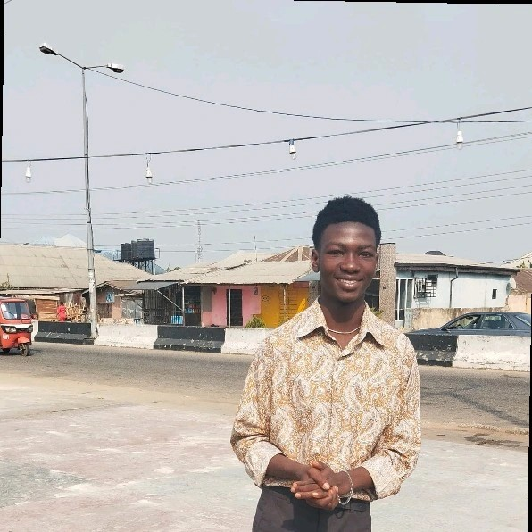

Home
About Me
My name is Ohotuowo Morgan Agrinya, and I am from Cross River State, Nigeria. I am a third-year Computer Engineering student at the University of Uyo (UNIUYO) and a BYU–Pathway Worldwide student, currently taking WDD 231 (Frontend Development). I am passionate about technology and web development, with growing experience in building responsive and user-friendly interfaces. Outside academics, I enjoy playing basketball and listening to recitals and instrumental music.
Student Photo
Web Certificate Courses
Total Credits: